WorldFirst · Business customer story · Visual library
PRISM+ visual library
Frames from WorldFirst's own film about PRISM+, picked for the case page, social posts and sales material. Select a frame to see it full size. Every frame downloads at the film's native resolution.
36 frames · 8 top picks · How PRISM+ Grew from a 6-Person Startup to Serving 800,000+ Households · updated 20 Oct 2026
01
Top picks
The frames to reach for first: sharp, clean of on-screen text, and strongest for the page.
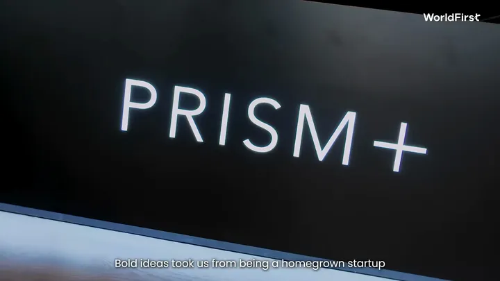
Lit PRISM+ sign
Banner Intro image Share image
Text in frame WorldFirst branding
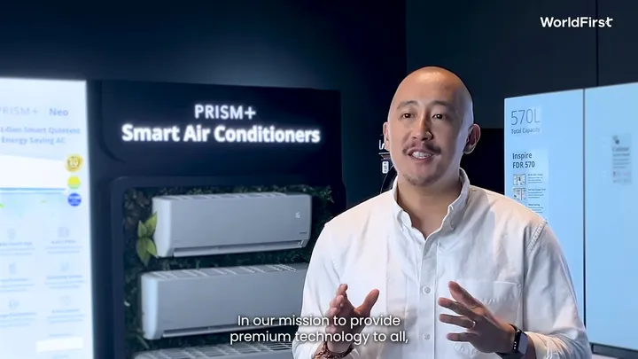
Jonathan Wong smiling in the PRISM+ showroom
Hero Headshot Social 1:1 Social 4:5 Share image
Text in frame WorldFirst branding
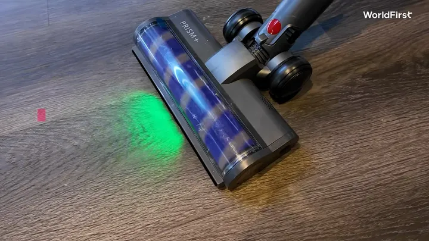
PRISM+ cordless vacuum on a wooden floor
Intro image Banner Social 1:1 Social 4:5 Share image
Text in frame WorldFirst branding
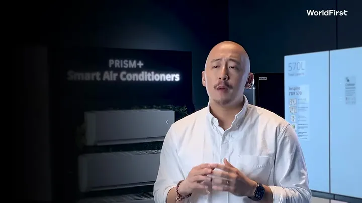
Jonathan Wong in the PRISM+ showroom, no subtitle
Hero Intro image Headshot Social 1:1 Social 4:5 Story 9:16 Share image
WorldFirst branding
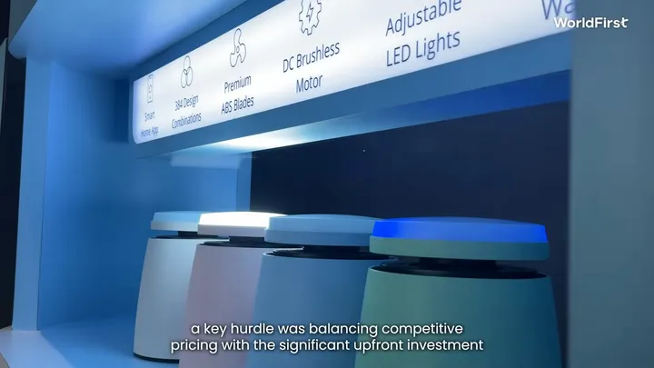
PRISM+ ceiling fan units on a lit display shelf
Banner Intro image Social 1:1 Social 4:5 Share image
Text in frame WorldFirst branding
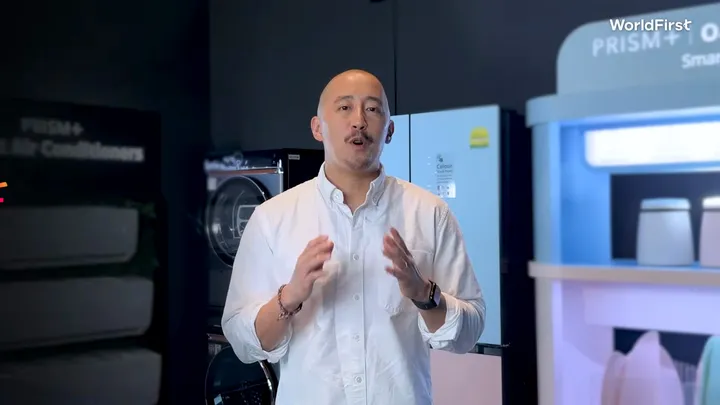
Jonathan Wong in the PRISM+ showroom, wide, no subtitle
Hero Intro image Headshot Social 4:5 Story 9:16 Share image
WorldFirst branding
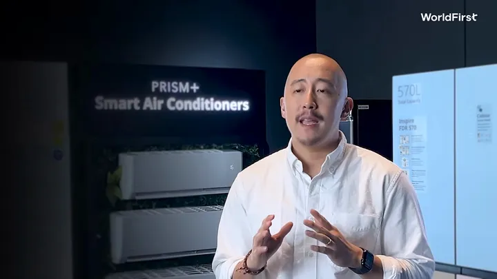
Jonathan Wong in the PRISM+ showroom, close, no subtitle
Hero Intro image Headshot Social 1:1 Social 4:5 Story 9:16 Share image
WorldFirst branding
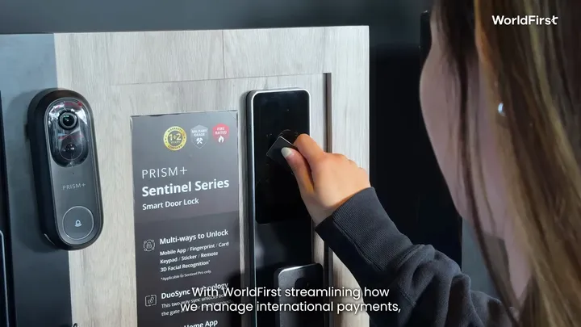
Unlocking a PRISM+ Sentinel Series smart door lock
Social 1:1 Social 4:5 Intro image
Text in frame WorldFirst branding
02
The film
Where the frames come from. The film marked for the case page sits at the start of the article.
Title
How PRISM+ Grew from a 6-Person Startup to Serving 800,000+ Households
Resolution
1920 x 1080, landscape
On the case page
Yes, at the start of the article.
03
All frames
Filter by what the frame shows or by where it can be used. Use tags mean the frame crops to that slot without losing the subject.
All 36 Portrait 14 At work 3 Product 10 Place 2 Brand 4 Screen 3
Any use Hero 8 Intro image 15 Headshot 9 Banner 5 Share image 13 Social 1:1 14 Social 4:5 13 Story 9:16 3
Lit PRISM+ sign
Banner Intro image Share image
Text in frame WorldFirst branding
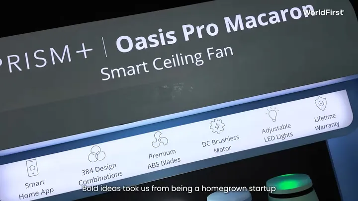
PRISM+ Oasis Pro Macaron Smart Ceiling Fan display sign
Intro image
Text in frame WorldFirst branding
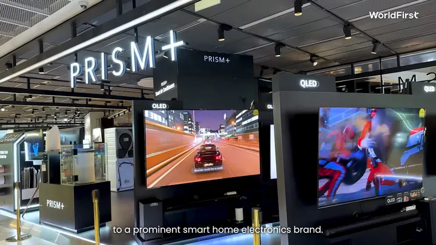
Inside a PRISM+ store
Intro image Banner
Text in frame WorldFirst branding Third-party brand
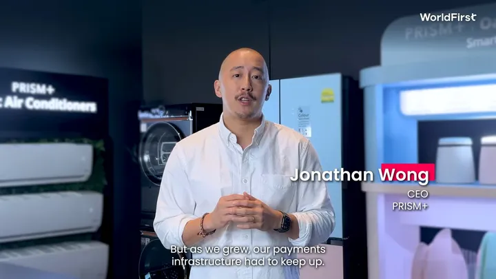
Jonathan Wong, CEO of PRISM+, named on screen
Headshot
Text in frame WorldFirst branding
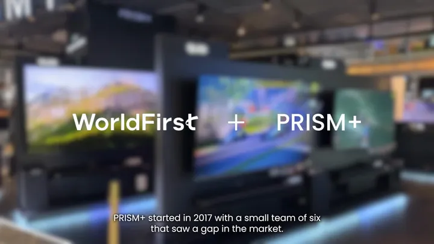
WorldFirst + PRISM+ title card
Share image
Text in frame WorldFirst branding
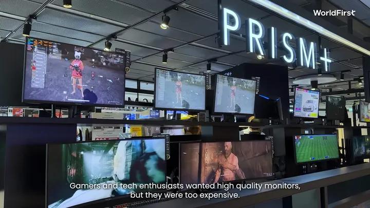
PRISM+ gaming monitor wall
Text in frame WorldFirst branding Third-party brand
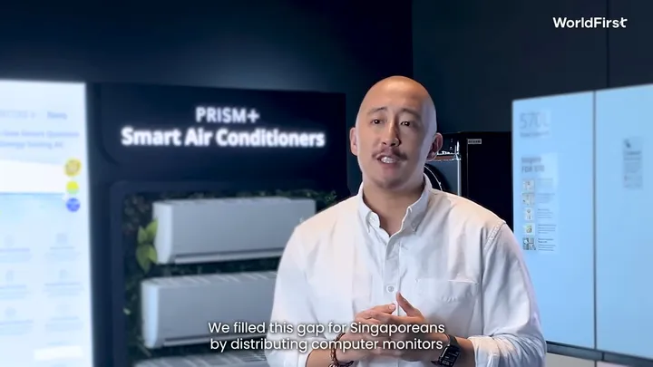
Jonathan Wong in front of the PRISM+ Smart Air Conditioners display
Hero Headshot Social 1:1 Share image
Text in frame WorldFirst branding
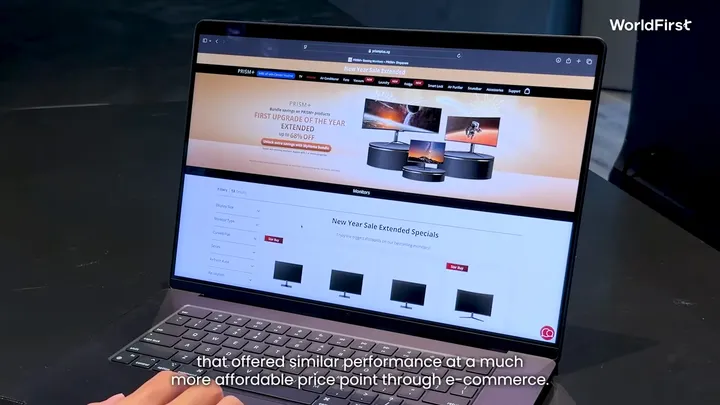
The PRISM+ online store on a laptop
Intro image
Text in frame WorldFirst branding
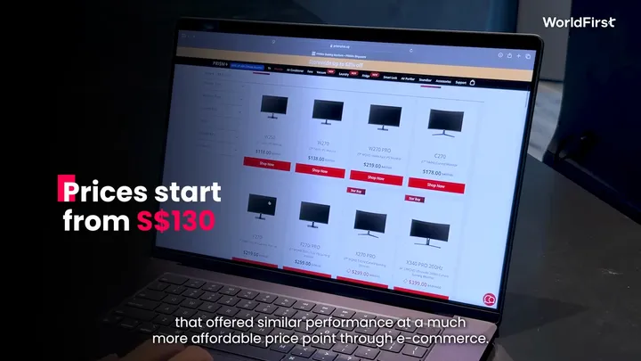
PRISM+ monitors online, with the film graphic Prices start from S$130
Text in frame WorldFirst branding
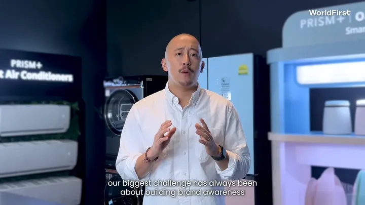
Jonathan Wong on building brand awareness
Social 4:5 Share image
Text in frame WorldFirst branding
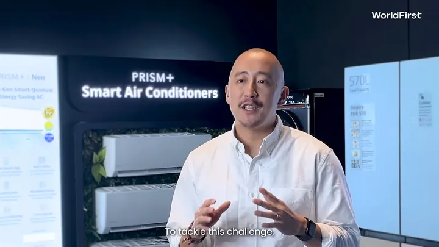
Jonathan Wong speaking in the PRISM+ showroom
Hero Headshot Social 1:1 Share image
Text in frame WorldFirst branding
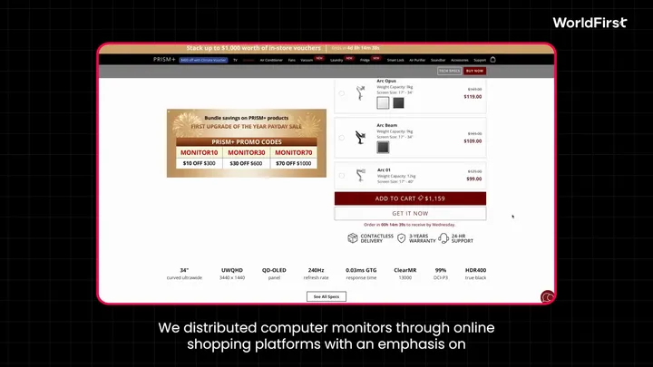
A PRISM+ monitor product page
Text in frame WorldFirst branding
Jonathan Wong smiling in the PRISM+ showroom
Hero Headshot Social 1:1 Social 4:5 Share image
Text in frame WorldFirst branding
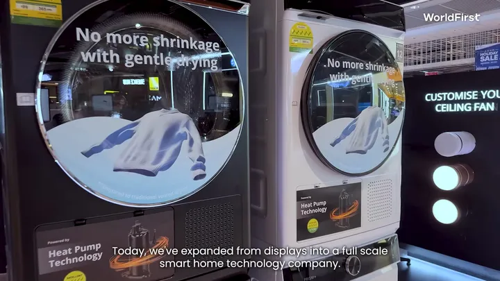
PRISM+ heat pump dryers on display
Intro image Social 1:1
Text in frame WorldFirst branding Third-party brand
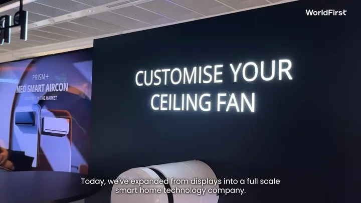
PRISM+ ceiling fan display
Banner Intro image
Text in frame WorldFirst branding
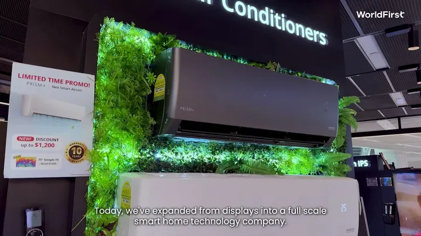
PRISM+ air conditioner on a plant wall
Social 1:1 Social 4:5
Text in frame WorldFirst branding Third-party brand
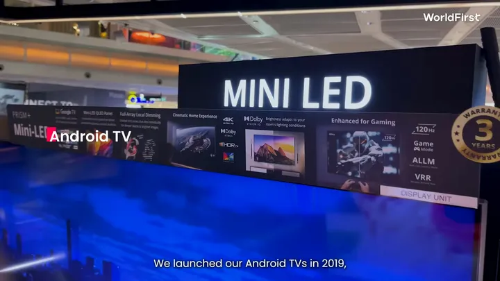
PRISM+ Mini LED TV display
Text in frame WorldFirst branding Third-party brand
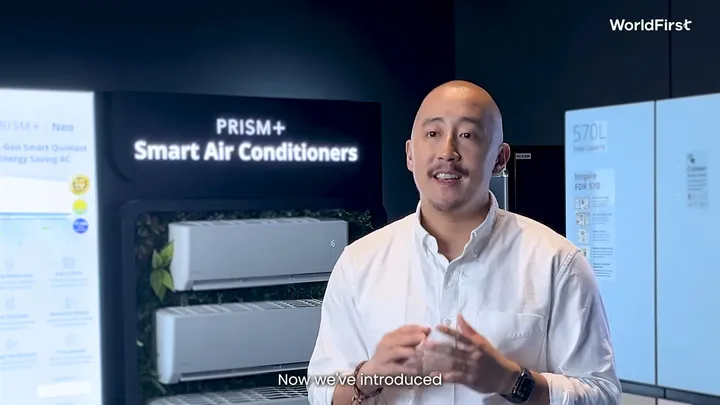
Jonathan Wong talking about the PRISM+ range
Hero Headshot Social 1:1 Share image
Text in frame WorldFirst branding
PRISM+ cordless vacuum on a wooden floor
Intro image Banner Social 1:1 Social 4:5 Share image
Text in frame WorldFirst branding
Jonathan Wong in the PRISM+ showroom, no subtitle
Hero Intro image Headshot Social 1:1 Social 4:5 Story 9:16 Share image
WorldFirst branding
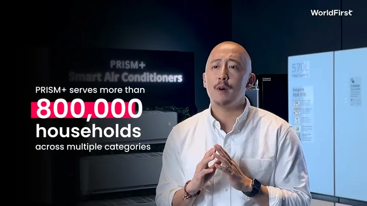
Film graphic: PRISM+ serves more than 800,000 households
Text in frame WorldFirst branding
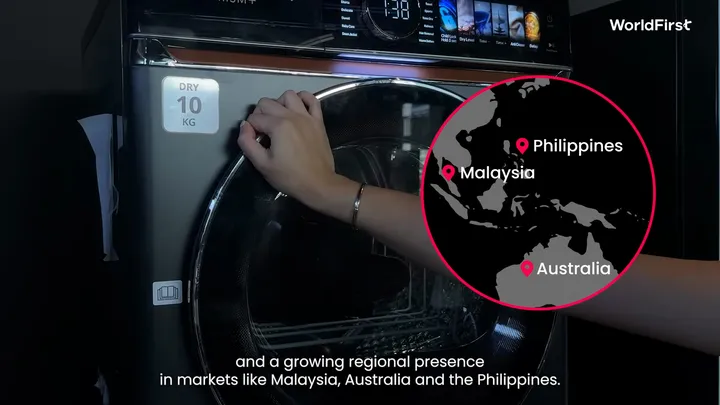
Opening a PRISM+ washer-dryer, with a map of PRISM+ markets
Text in frame WorldFirst branding
PRISM+ ceiling fan units on a lit display shelf
Banner Intro image Social 1:1 Social 4:5 Share image
Text in frame WorldFirst branding
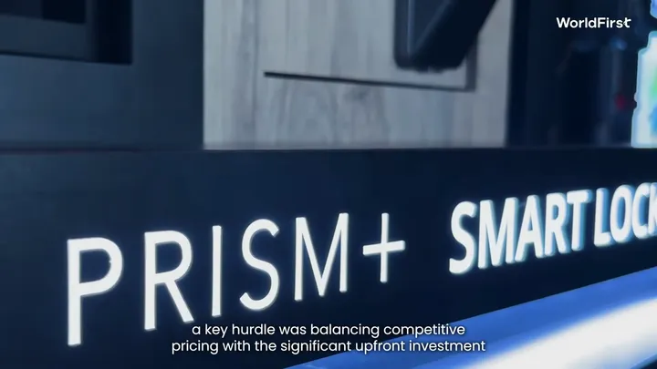
PRISM+ Smart Lock sign
Intro image
Text in frame WorldFirst branding
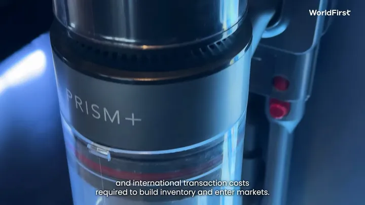
PRISM+ cordless vacuum, close-up
Social 4:5
Text in frame WorldFirst branding
Jonathan Wong in the PRISM+ showroom, wide, no subtitle
Hero Intro image Headshot Social 4:5 Story 9:16 Share image
WorldFirst branding
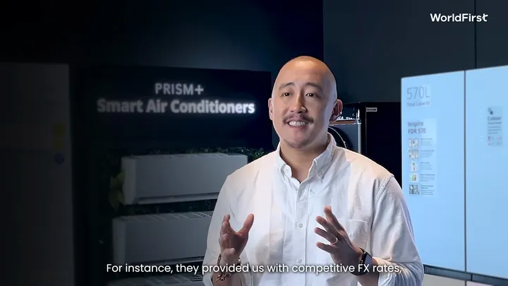
Jonathan Wong smiling as he talks about FX rates
Hero Headshot Social 1:1 Share image
Text in frame WorldFirst branding
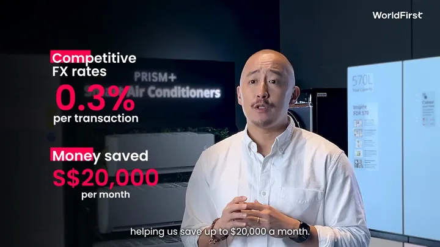
Film graphic: competitive FX rates 0.3% per transaction, money saved S$20,000 per month
Text in frame WorldFirst branding
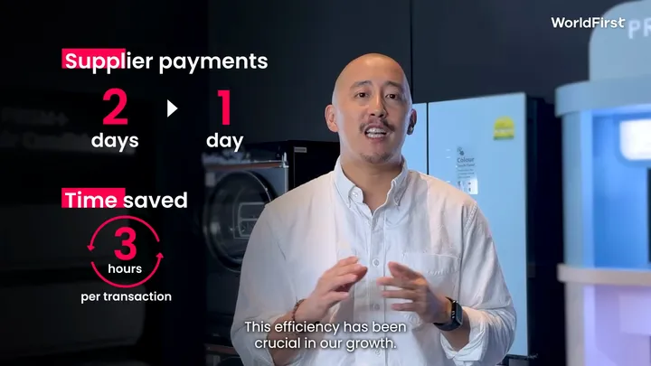
Film graphic: supplier payments 2 days to 1 day, 3 hours saved per transaction
Text in frame WorldFirst branding Soft focus
Jonathan Wong in the PRISM+ showroom, close, no subtitle
Hero Intro image Headshot Social 1:1 Social 4:5 Story 9:16 Share image
WorldFirst branding
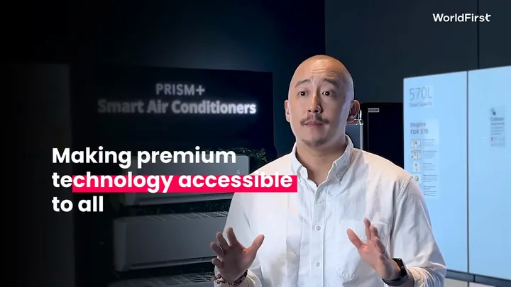
Film graphic: Making premium technology accessible to all
Text in frame WorldFirst branding
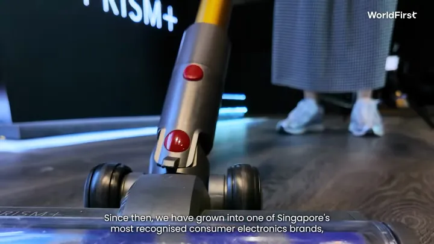
A PRISM+ cordless vacuum in use
Social 4:5
Text in frame WorldFirst branding
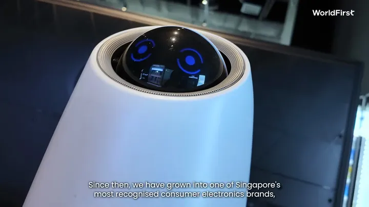
PRISM+ air purifier, close-up
Social 1:1 Social 4:5 Intro image
Text in frame WorldFirst branding
Unlocking a PRISM+ Sentinel Series smart door lock
Social 1:1 Social 4:5 Intro image
Text in frame WorldFirst branding
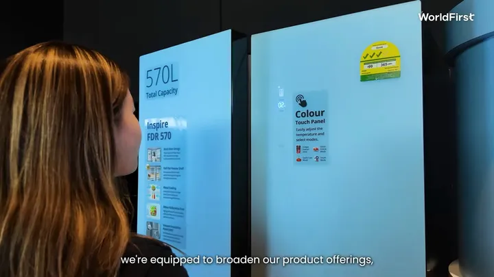
Looking at a PRISM+ Inspire FDR 570 fridge
Social 4:5
Text in frame WorldFirst branding
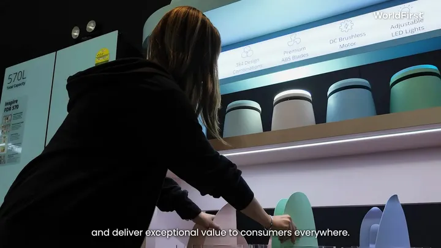
Choosing ceiling fan blades at a PRISM+ display
Social 1:1 Intro image
Text in frame WorldFirst branding
04
Using these frames
Crop to the slot; never stretch a frame or a logo, and never upscale. Clear every flag before a frame goes public.
Hero, desktop
906 x 680 (4:3)
Hero, tablet
1152 x 768 (3:2)
Hero, mobile
540 x 360 (3:2)
Introduction image
1143 x 491
Quote headshot
120 x 120 (1:1)
Social
1080 x 1080 (1:1), 1080 x 1350 (4:5)
Text in frame
Captions, a lower third or a title card is in the frame. Crop it out or pick another frame.
Third-party brand
Another company's name or logo is visible (named in the crop hint). Clear it or crop it out.
Competitor
A competitor is visible. Never used; listed only if the audit needs it.
Children: needs client permission
Children are visible. Needs the client's written permission before any use.
WorldFirst branding
The WorldFirst logo or app is on screen. Check it is the current logo and product name.
Low resolution
Under the width of the larger slots. Small uses only.
Soft focus
Slightly soft. Small uses only.
Frames are stills from WorldFirst's own published films. Anything showing children, a third-party brand or on-screen text needs clearing before use, and no frame showing a competitor is in this library.